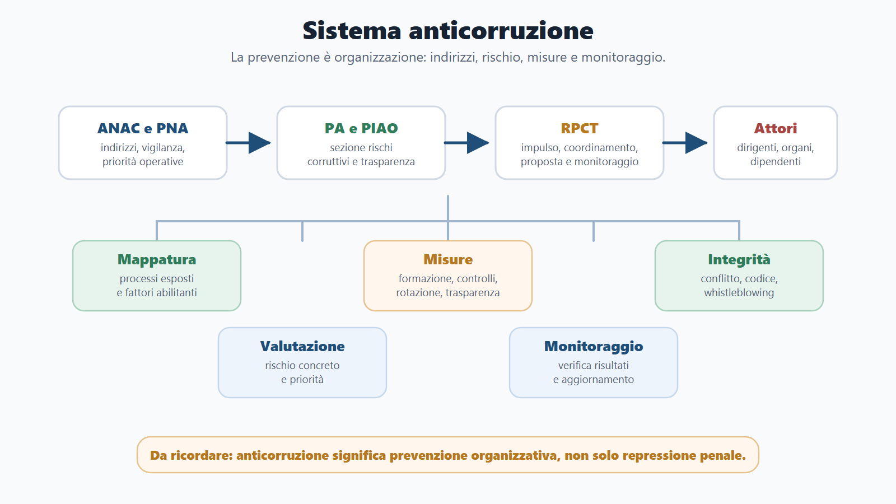
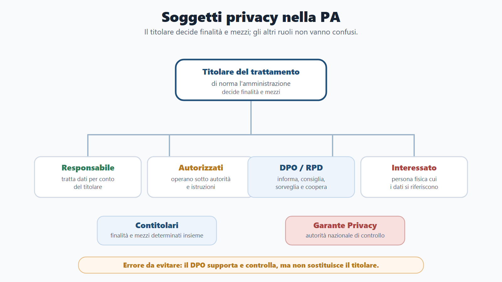
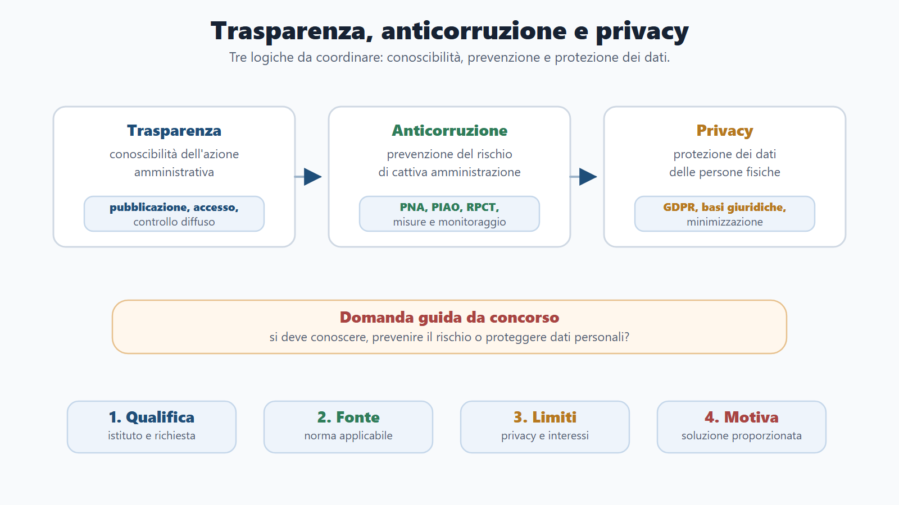
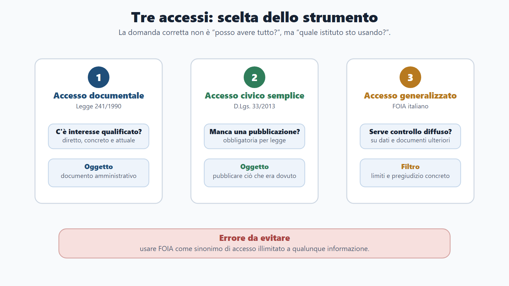
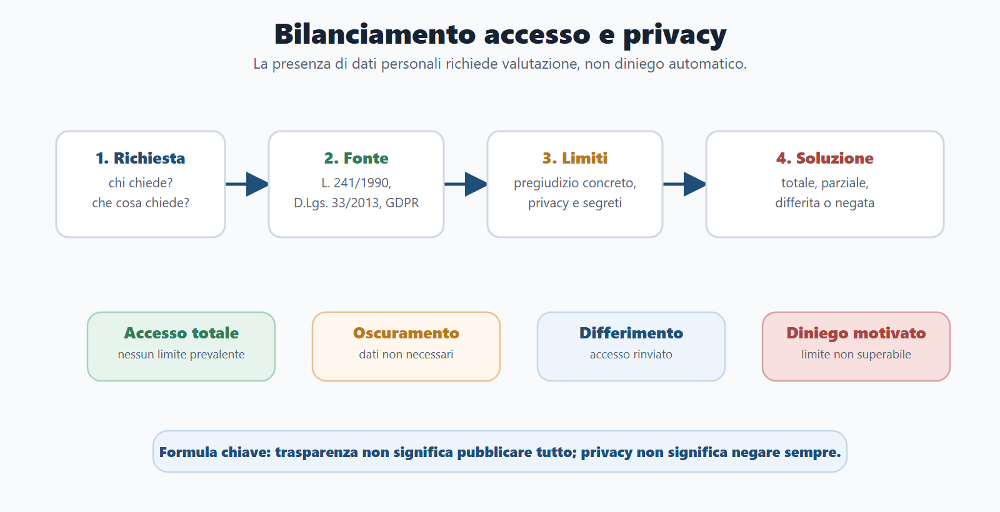

VOL-01 · Capitolo 07
Parte II · Materie comuni
Trasparenza, anticorruzione
e privacy
Compaiono spesso vicine nei bandi, ma hanno funzioni diverse. La trasparenza rende conoscibile l’attività pubblica; l’anticorruzione previene il cattivo uso del potere; la privacy protegge i dati personali quando l’amministrazione raccoglie, usa, comunica o pubblica informazioni su persone fisiche.
Schema
Sistema anticorruzione rpct piao

Schema
Soggetti gdpr pa

Schema
Trasparenza anticorruzione privacy mappa

Schema
Tre accessi decisione

Schema
Bilanciamento foia privacy

01 · La regola del candidato
Chi può chiedere che cosa, con quale strumento, entro quali limiti
Questo capitolo non ripete il procedimento già visto né i doveri del dipendente. Li richiama per risolvere le domande frequenti: accesso documentale o civico? Pubblicazione obbligatoria o diffusione illecita? Prevenzione o sanzione disciplinare? Consenso privacy o obbligo legale della PA?
Trasparenza
Obblighi di pubblicazione, sezione Amministrazione trasparente, tre accessi.
Anticorruzione
L. 190/2012, PNA, PIAO, RPCT, ANAC, misure, whistleblowing.
Privacy
GDPR: principi, basi giuridiche, soggetti, diritti, data breach, bilanciamento.
02 · BANDO
Come usare questo capitolo sul bando
| Come usarlo | Errore da diario | |
|---|---|---|
| B — Bando | Cerca trasparenza, anticorruzione, accesso civico, FOIA, privacy, GDPR, codice di comportamento, RPCT, ANAC, whistleblowing, conflitto. | Studiare tre materie come se fossero una sola parola. |
| A — Aree | Collega a amministrativo, pubblico impiego, enti locali, contratti, digitale, responsabilità, prova situazionale. | Duplicare i capitoli 5 e 6 invece di qualificare l’istituto. |
| N — Nuclei | Prima la tabella degli accessi, poi obblighi di pubblicazione, anticorruzione/RPCT, privacy/GDPR e bilanciamento. | Saltare i tre accessi. |
| D — Diario | Confondere civico e documentale; consenso sempre necessario; pubblicare dati senza base; RPCT come organo politico. | Le trappole più frequenti in prova. |
| O — Output | Tabella comparativa, orale su trasparenza/privacy, mini-caso FOIA con dati personali, mappa soggetti privacy. | Risposte con la sola parola «trasparenza». |
03 · Trasparenza
Conoscibilità nei modi previsti, non curiosità generale
Il D.Lgs. 33/2013 riordina obblighi di pubblicità, trasparenza e diffusione. Dopo il D.Lgs. 97/2016 è collegata anche all’accesso civico e al controllo diffuso. Gli obblighi non nascono da una scelta libera dell’ufficio: derivano da norme che individuano categorie di dati. Un dato pubblicato ma incomprensibile, non aggiornato o non reperibile non realizza il controllo.
| Elemento | Che cosa ricordare |
|---|---|
| Funzione | Controllo democratico e prevenzione della corruzione. |
| Amministrazione trasparente | Luogo ordinato: organizzazione, attività, procedimenti, personale, performance, provvedimenti, sovvenzioni, bilanci, controlli e altri dati previsti. |
| Qualità | Comprensibili, aggiornate, complete, accessibili, riutilizzabili nei limiti. Trasparenza non è solo «mettere online». |
| Proporzionalità | Oscurare ciò che non è necessario; rispettare i tempi di pubblicazione; evitare dati personali eccedenti. |
| Non pubblicato ≠ segreto | Potrebbe essere accessibile con accesso documentale o generalizzato, con presupposti diversi. |
04 · Tre accessi
Qualifica la richiesta prima di rispondere
Una risposta buona non recita solo le definizioni: qualifica la richiesta, individua la fonte, verifica i limiti e spiega la tutela.
| Chi | Oggetto e presupposto | Errore | |
|---|---|---|---|
| Documentale L. 241/1990 | Interessato qualificato | Documenti amministrativi. Interesse diretto, concreto e attuale. | Dire che spetta a chiunque. |
| Civico semplice D.Lgs. 33/2013 | Chiunque | Dati da pubblicare obbligatoriamente. Omessa pubblicazione. | Usarlo per qualunque documento detenuto. |
| Civico generalizzato (FOIA italiano) | Chiunque, senza motivazione | Dati e documenti ulteriori, per controllo diffuso, nei limiti. Non costringe a creare nuovi documenti in modo sproporzionato. | Pensare che sia illimitato. |
Se un soggetto chiede copia di documenti che incidono su una propria posizione, con interesse qualificato, il riferimento è l’accesso documentale, non il FOIA. Il registro degli accessi aiuta a tracciare, non è la fonte del diritto.
05 · Limiti e FOIA
Trasparenza non è pubblicare tutto; privacy non è negare sempre
Sequenza minima del FOIA: istanza senza motivazione; verifica se i dati sono detenuti; controinteressati; limiti assoluti o relativi e pregiudizio concreto; accoglimento, parziale, differimento o diniego motivato; riesame e tutela giurisdizionale.
| Tipo di limite | Logica | Effetto |
|---|---|---|
| Esclusione o divieto | L’ordinamento impedisce la conoscibilità. | Diniego, salvo diversa base. |
| Limite relativo | Valutare se l’accesso produce un pregiudizio concreto. | Accesso totale, parziale, differito o negato. |
| Protezione dati | Pertinenza, necessità, minimizzazione, oscuramento. Non basta dire «privacy». | Bilanciamento caso per caso. |
Pubblici: sicurezza, difesa, relazioni internazionali, stabilità economico-finanziaria, indagini e ispezioni, procedimenti sensibili. Privati: dati personali, corrispondenza, interessi economici e commerciali, proprietà intellettuale e segreti. Oscuramento e accesso parziale sono spesso la soluzione proporzionata.
06 · Anticorruzione
Prevenzione organizzativa, non solo diritto penale
La l. 190/2012 cerca di ridurre occasioni di cattiva amministrazione, abuso, favoritismo, opacità e conflitto. Corruzione in senso amministrativo ampio: rischio che il potere sia usato in modo distorto, non imparziale o non controllabile. La mappatura dei processi è il passaggio operativo centrale: attività esposte, eventi rischiosi, misure proporzionate.
PNA / ANAC
Indirizzo: criteri e priorità. Il PNA 2025 (delibera ANAC n. 19/2026) orienta il triennio 2026-2028. Non sostituisce la responsabilità dell’ente.
PIAO
Per molte amministrazioni la sezione rischi corruttivi e trasparenza è nel PIAO. Contenitore di misure, non tutta la programmazione del personale.
RPCT
Impulso, coordinamento, proposta, monitoraggio. Non è il capo di tutti i procedimenti né l’unico responsabile dell’integrità.
07 · ANAC, incarichi, codice, segnalazioni
ANAC non si occupa «solo di appalti»
PNA e indirizzi; vigilanza sugli obblighi di trasparenza; indicazioni sull’accesso civico generalizzato; poteri di intervento; ruolo nei contratti (richiamato qui per il rischio); canale esterno del whistleblowing. L’autorità indirizza e vigila; organizzare uffici, flussi, pubblicazioni e controlli resta dell’amministrazione.
| Istituto | Distinzione pratica |
|---|---|
| Inconferibilità | L’incarico non può essere attribuito in presenza di condizioni pregresse (D.Lgs. 39/2013). |
| Incompatibilità | Non cumulabile con altre cariche o funzioni; va rimossa la situazione incompatibile. |
| Conflitto di interessi | Interesse personale che può interferire: comunicazione e spesso astensione. |
| Codice di comportamento | Presidio di integrità: regali, conflitto, astensione, rapporti con il pubblico, uso di beni, informazioni, informatica e social. Rende le condotte prevedibili e controllabili. |
| Whistleblowing | D.Lgs. 24/2023: canali, riservatezza, divieto di ritorsione. Misura di emersione del rischio, non litigio personale. |
08 · GDPR
Trattamento: qualunque operazione su dati personali
Raccolta, registrazione, organizzazione, conservazione, consultazione, uso, comunicazione, diffusione, cancellazione. Quadro: Regolamento UE 2016/679, D.Lgs. 196/2003 coordinato, D.Lgs. 101/2018. Accountability: il titolare deve poter dimostrare la conformità delle scelte.
| Principio | Significato per la PA |
|---|---|
| Liceità, correttezza, trasparenza | Base giuridica, trattamento corretto e comprensibile. |
| Limitazione della finalità | Finalità determinate, esplicite e legittime. |
| Minimizzazione | Solo dati adeguati, pertinenti e necessari. |
| Esattezza e limitazione della conservazione | Dati corretti e aggiornati; non oltre il tempo necessario. |
| Integrità e riservatezza | Misure di sicurezza adeguate al rischio. |
Dire che la PA deve sempre chiedere il consenso. Spesso è sbagliato: quando agisce per obbligo legale, interesse pubblico o esercizio di pubblici poteri, la base non è il consenso. Il consenso è fragile se il cittadino non è davvero libero di fronte a un potere pubblico.
09 · Basi, categorie, diritti, soggetti
Il DPO non decide al posto del titolare
| Nucleo | Che cosa fare in prova |
|---|---|
| Basi più frequenti in PA | Obbligo legale, interesse pubblico, esercizio di pubblici poteri. Concorso, protocollo, pubblicazione in Amministrazione trasparente: di regola non il consenso. |
| Informativa | Titolare, dati, finalità, base, destinatari, tempi, diritti, reclamo al Garante. |
| Categorie particolari | Salute, genetici, biometrici identificativi, origine, opinioni politiche, convinzioni, sindacato, vita o orientamento sessuale. Non usare più «dati sensibili» come categoria tecnica principale. Dati giudiziari: base normativa e garanzie. Minimizzare, soprattutto in pubblicazione. |
| Diritti | Accesso, rettifica, cancellazione, limitazione, portabilità, opposizione, tutele su decisioni automatizzate: non assoluti, con limiti di legge. |
| Soggetti | Titolare: di norma l’amministrazione. Responsabile: tratta per conto. Autorizzati: sotto autorità. DPO/RPD: informa, consiglia, sorveglia, coopera con il Garante. Non sostituisce il titolare. |
10 · Sicurezza privacy
Comunicazione, diffusione, data breach
Comunicare è dare conoscenza a soggetti determinati; diffondere è darla a soggetti indeterminati, per esempio online. La pubblicazione in Amministrazione trasparente è diffusione: durata, pertinenza, oscuramento, indicizzazione. Un incidente informatico non coincide automaticamente con un data breach, ma può diventarlo se coinvolge dati personali.
| Istituto | Funzione |
|---|---|
| Data breach | Violazione di sicurezza: perdita, distruzione, modifica, divulgazione o accesso non autorizzato. |
| Notifica al Garante | Quando ricorrono i presupposti; comunicazione all’interessato se il rischio per diritti e libertà è elevato. |
| DPIA | Valutazione d’impatto per trattamenti a rischio elevato. |
| Registro dei trattamenti | Mappa organizzativa delle attività. |
| Privacy by design / by default | Protezione progettata dall’inizio; impostazioni predefinite orientate alla minimizzazione. |
11 · Schema di risposta
Sette passaggi quando la traccia mescola accesso e dati
| Operazione | |
|---|---|
| 1 | Qualifica: documentale, civico semplice, generalizzato o richiesta informativa. |
| 2 | Fonte: L. 241/1990, D.Lgs. 33/2013, D.Lgs. 97/2016, GDPR, Codice privacy o disciplina speciale. |
| 3 | Richiedente: interessato qualificato o chiunque. |
| 4 | Oggetto: documento, dato da pubblicare, dato ulteriore, dato personale, categoria particolare, dato giudiziario. |
| 5 | Limiti e controinteressati: segreti, sicurezza, privacy, interessi economici, pregiudizio concreto. |
| 6 | Soluzione proporzionata: accoglimento, parziale, oscuramento, differimento, diniego motivato. |
| 7 | Tutela: riesame, difensore civico quando previsto, giudice amministrativo o altri rimedi. |
12 · Caso guidato
«Per trasparenza tutto deve essere pubblicato»
Un cittadino chiede copia di tutti i provvedimenti sui contributi economici dell’ultimo anno, compresi nominativi, indirizzi, condizioni familiari e motivazioni sanitarie. L’ufficio risponde che per trasparenza tutto va pubblicato. La risposta è sbagliata: non qualifica l’istanza e non bilancia.
Percorso
Senza interesse qualificato personale non è accesso documentale. Può essere generalizzato, o civico semplice se esistono obblighi di pubblicazione. Alcune informazioni su contributi possono essere soggette a trasparenza: ciò non autorizza ogni dettaglio personale. Dati sanitari e condizioni familiari richiedono cautele rafforzate.
Risposta da concorso
Distinguere i tre accessi; verificare obblighi di pubblicazione; applicare i limiti (art. 5-bis); proteggere dati personali e categorie particolari; motivare accoglimento parziale, oscuramento, diniego o differimento. Controllo sull’uso delle risorse senza diffusione eccedente.
13 · Verifica
Due domande da saper spiegare
Differenza tra i tre accessi
L’accesso documentale (L. 241/1990) richiede interesse diretto, concreto e attuale collegato al documento. Il civico semplice consente a chiunque di chiedere la pubblicazione di ciò che la PA aveva l’obbligo di pubblicare. Il civico generalizzato consente a chiunque di chiedere dati e documenti ulteriori, senza motivazione, per il controllo diffuso, nei limiti a tutela di interessi pubblici e privati.
Se il documento contiene dati personali, l’accesso va sempre negato?
No. La presenza di dati impone una valutazione, non un automatismo. Verificare tipo di accesso, base normativa, finalità, pregiudizio concreto, controinteressati, oscuramento o accesso parziale. La privacy può limitare, ma non cancella in assoluto trasparenza e tutela delle posizioni giuridiche.
14 · Da tenere ferme
Cinque regole, con il perché
1. Trasparenza è conoscibilità nei modi previsti, non pubblicazione totale. Perché un dato eccedente può violare la privacy senza aumentare il controllo utile.
2. I tre accessi hanno chi, oggetto e presupposto diversi. Perché usare «FOIA» per ogni richiesta è la trappola più frequente.
3. L’anticorruzione è prevenzione organizzativa (l. 190/2012, PNA, PIAO, RPCT, misure). Perché non coincide con la repressione penale.
4. Il GDPR impone principi, basi, informativa, diritti, soggetti e sicurezza. Perché in PA il consenso spesso non è la base.
5. La risposta corretta bilancia trasparenza, riservatezza, interesse pubblico e proporzionalità. Perché «trasparenza» e «privacy» da sole non sono risposte.
Prossimo capitolo
Contabilità pubblica essenziale
Dal controllo sull’azione al ciclo delle risorse: bilancio e rendiconto, impegno e pagamento, residui, Corte dei conti, enti locali, CIG e CUP.